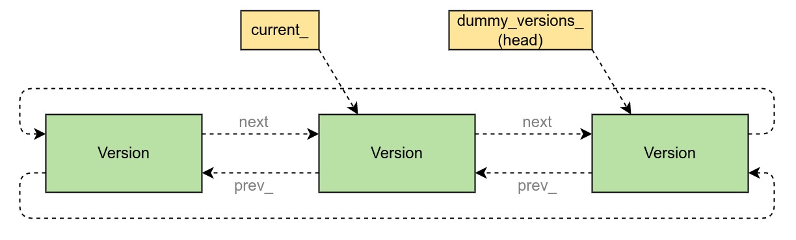
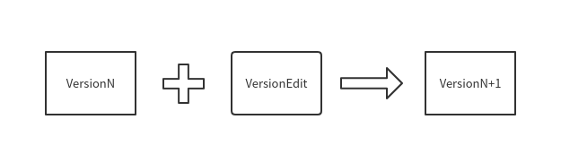
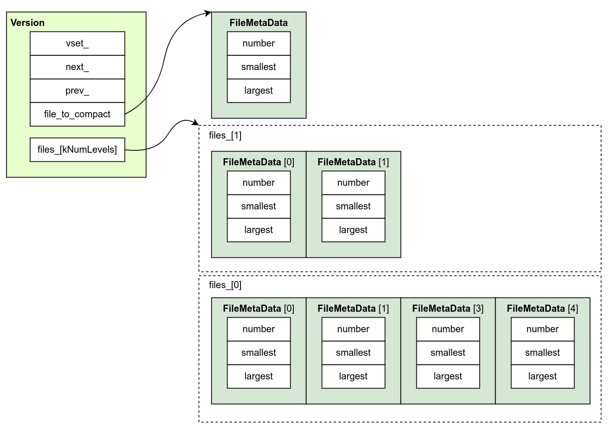
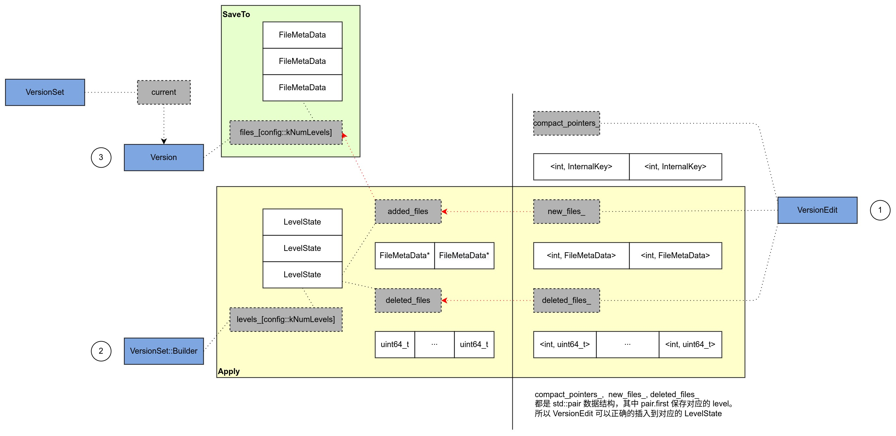

Ch06-LevelDB 之 Manifest
May 18, 2022
要想说明 Manifest 就不得不提出另一个重要的概念——Version。
众所周知当 MemTable 达到指定阈值之后会触发 Minor Compaction 操作，它会将原始数据保存到 SSTable，同时记录本次原始数据的元数据信息到 FileMetaData。如果触发多次 Minor Compaction 操作，便会生成多个 FileMetaData，LevelDB 会将这些 FileMetaData 组织到一个 array 中，此时 array 所在类便是 Version。
我们想像一个场景，如果一个线程 thread1 要查找指定数据，根据目前的设计必然需要遍历 array，在遍历的过程中，发生了一次 Major Compaction 删除掉了该 FileMetaData，于是 thread1 就可能会无法引用到该 FileMetaData 而报错。为了解决这个问题，最常见的莫过于两种手段，一种是加锁，另一种是 MVCC。加锁会导致数据库读写性能明显下滑，所以 LevelDB 选用了 MVCC 的方式。
为了能够有效的实现 MVCC，LevelDB 将之前的所有 FileMetaData 和当前 Minor Compaction 中的 FileMetaData 封装成一个 Version，这样多次 Minor Compaction 操作就会形成多个 Version，LevelDB 使用 循环双向链表 对其进行管理起。我们再回顾上述的场景，thread1 在 version1 中查找，而 Major Compaction 则在 version2 中删除，它们两个互不影响。
每次 version 新增时都会将先前 version 中所有的 FileMetaData 复制到自己的 array 中，那么很显然先前的 version 完全没有必要一直保留下来，所以 version 内部维护了一个 refs_ 的变量来记录当前 version 被引用的数量，当 refs_ 变为零时，调用 delete this 将自身析构。LevelDB 在多处对 refs_ 进行了校验，比如 Get/Minor Compaction/Major Compaction 等。
为了能够在系统下次启动的时候读取到最新的 Version，将 Version 保存到文件便是不二之选，这个文件便是 Manifest。
不过 Manifest 的构建有一丢丢的小技巧，我们已经注意到 当前 Version = 上次 Version + 本次 FileMetaData，如果有多个 Version，然后生成多个 Manifest 文件并不是个最佳选择。用动态的视角来看，那为什么不每次保存 本次 FileMetaData 呢？version1 向 Manifest 追加当次 FileMetaData，version2 向 Manifest 追加当次 FileMetaData，随着 Minor Compaction 的不断进行，Manifest 永远保存的都是最新且全量的 Version。
LevelDB 为了方便代码编写，将 FileMetaData 又封装了一层，称为 VersionEdit。Manifest 的每行记录便是 VersionEdit。
1. 组织形式 #
1.1 VersionSet 与 Version #
VersionSet 包含多个 Version，这些 Version 采用循环双向链表组织，头结点是 dummy_versions_，尾节点是 current_。如果新插入一个 Version，current_ 指向该 Version，并然后用尾插法插入到该链表的尾部。
// db/version_set.h
class VersionSet {
public:
// 将 version 追加到双向链表中
void VersionSet::AppendVersion(Version* v);
private:
Version* current_;
Version dummy_versions_;
}
class Version {
private:
Version* next_;
Version* prev_;
}

1.2 Version 与 VersionEdit #
Version 保存了 SkipList 所有 level 的元数据（数据量小的情况下可能只有 level0）。

2. VersionEdit #
一次 Minor Compaction 会将 MemTable 中的数据 Flush 到磁盘形成一个文件（后缀名为 ldb），该文件被称为 SSTable，它的元数据信息一般使用 FileMetaData 描述。VersionEdit 则是用于帮助完成 Minor Compaction 的工具类，临时保存了 SSTable 的元数据信息。
struct FileMetaData {
FileMetaData() : refs(0), allowed_seeks(1 << 30), file_size(0) {}
int refs;
int allowed_seeks; // Seeks allowed until compaction
uint64_t number; // VersionSet 分配的下一个 ldb 文件编号
uint64_t file_size; // SSTable 文件大小
InternalKey smallest; // SkipList 中第一个元素的 Key 值
InternalKey largest; // SkipList 中最后一个元素的 key 值
};
class VersionEdit {
...
DeletedFileSet deleted_files_; // 可以删除的 SSTable
std::vector<std::pair<int, FileMetaData>> new_files_; // 新增的 SSTable，<level, SSTableMeta>
}
3. Version #
每次 Compaction 完成之后，当前 Version 和 VersionEdit 合并后会形成新的 Version。
class Version {
private:
int refs_;
std::vector<FileMetaData*> files_[config::kNumLevels];
FileMetaData* file_to_compact_;
int file_to_compact_level_;
}

files_ 是非常重要的属性，每次 VersionEdit 都会将本次的 FileMetaData 追加在后面，后续用于 Compaction 中的 file 都是从该属性中取值。
4. VersionSet #
// db/version_set.cc
class VersionSet {
public:
// 将 VersionEdit 应用到到 Version 中，即将其中属性取出来然后赋值到 Version 中。
Status VersionSet::LogAndApply(VersionEdit* edit, port::Mutex* mu);
}
正常情况下，一次 Compaction 或者 MemTable 写入后，会产生一个 VersionEdit，将这个 VersionEdit 应用到当前 Version 上生成一个新的 Version，这个过程由 VersionSet::LogAndApply() 完成。
Status VersionSet::LogAndApply(VersionEdit* edit, port::Mutex* mu) {
Version* v = new Version(this);
{
/**
* Builder 有两个作用
* 1. Compaction 完成后将 VersionEdit 和 Version 合并形成新的 Version
* 2. LevelDB 启动起来的时候，将多个 VersionEdit 和 Version 合并形成新的 Version
*/
Builder builder(this, current_);
builder.Apply(edit);
builder.SaveTo(v);
}
Finalize(v); // 计算下一次要进行 major compaction 的 level
}
上述代码的完成的功能示意图如下所示，其中红色线条描述了 FileMetaData 是被怎么保存到 Version 中的。

- Compaction 触发之后，会先创建一个 FileMetaData 对象 meta，等到 SSTable 全部写入成功后（此时 FileMetaData 所有属性都会被成功初始化），将其移动制到 VersionEdit 中的 new_files 属性中；
VersionSet::Builder::Apply()接着会将 VersionEdit 中的 new_files 复制到 VersionSet 中的 add_files 属性中VersionSet::Builder::SaveTo()又会将 VersionSet 中的 add_files 复制到 Version 中的 files 属性中。
5. 总结 #
每发生一次 Minor Compaction 就会生成一个 VersionEdit，等到 Minor Compaction 完成后会结合当前 Version 和 VersionEdit 生成一个新的 Version，这些 Version 又会以双向链表的形式组织在 VersionSet 中。